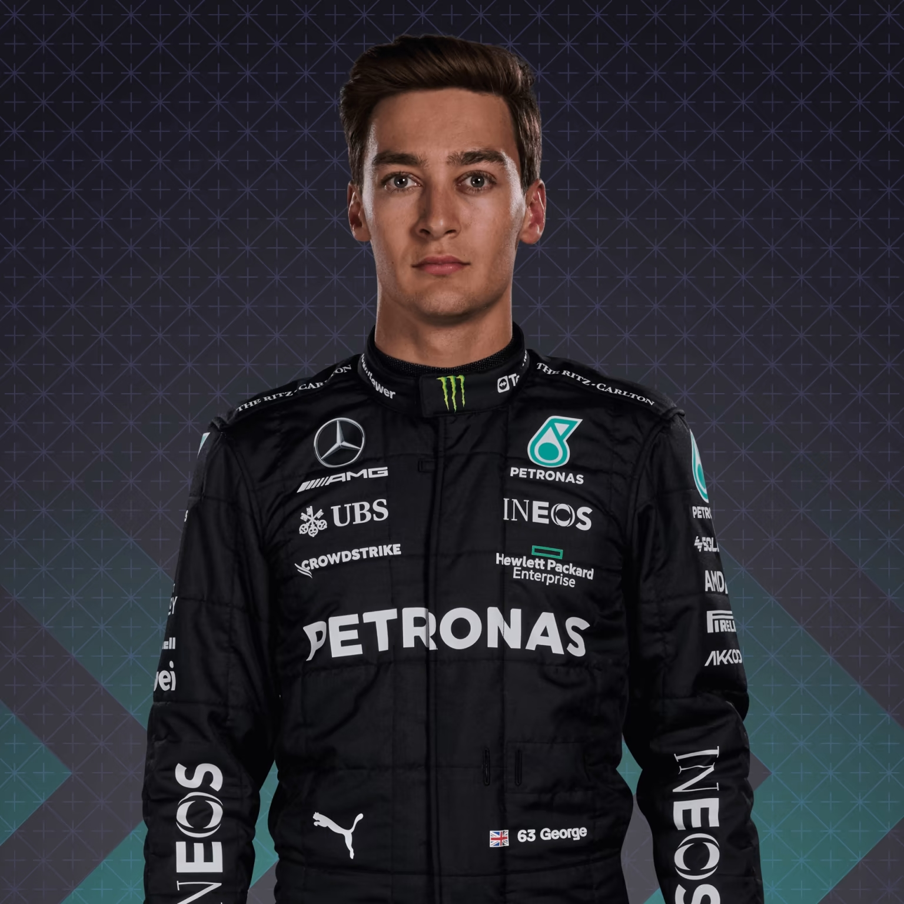
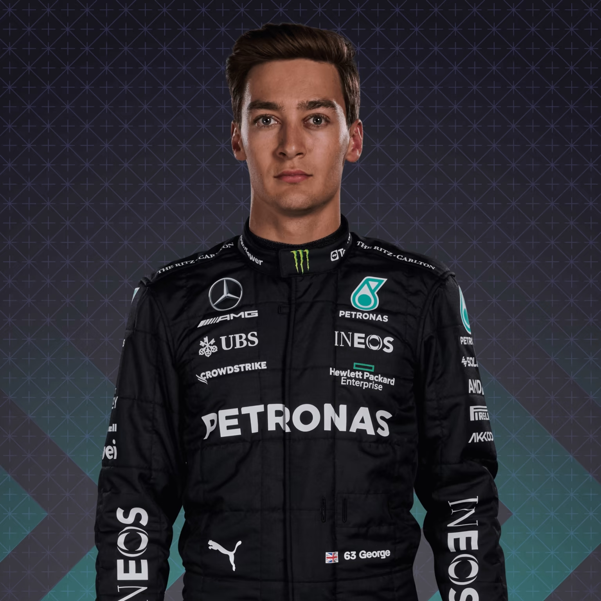

Mercedes-AMG Petronas Formula One Team, znana również jako Mercedes F1, to zespół wyścigowy Formuły 1, który został założony w 2010 roku po przejęciu przez Mercedesa brytyjskiego zespołu Brawn GP. Od debiutu w sezonie 2010, zespół zdobył 8 tytułów mistrzowskich konstruktorów i 7 tytułów mistrzowskich kierowców, co czyni go jednym z najbardziej utytułowanych zespołów w historii Formuły 1. Mercedes F1 jest jednym z najbardziej rozpoznawalnych i cenionych zespołów w F1, a ich bolidy wyróżniają się charakterystycznym, srebrnym malowaniem, co stało się swoistym symbolem dla drużyny.
Lewis Hamilton to siedmiokrotny mistrz świata w Formule 1, który dołączył do zespołu Mercedesa w 2013 roku. Jest jednym z najbardziej utytułowanych kierowców w historii F1 i uważany za jednego z najlepszych kierowców wszech czasów. George Russell to młodszy kierowca, który dołączył do Mercedesa na sezon 2022 po imponujących występach w zespole Williamsa. Russell jest jednym z najbardziej utalentowanych młodych kierowców w F1 i uważany jest za jednego z następców Hamiltona. Obaj kierowcy Mercedes-AMG Petronas Formula One Team mają ogromny wpływ na zespół, a ich umiejętności i doświadczenie przyczyniły się do wielu sukcesów Mercedesa w ostatnich latach. W sezonie 2022, Hamilton i Russell będą rywalizować o tytuł mistrza świata w barwach Mercedesa, co zapowiada się jako jedna z najbardziej emocjonujących walk w historii F1.
 
Bolid Mercedesa, jak wiele innych bolidów Formuły 1, to skomplikowana maszyna, która jest stale ulepszana i udoskonalana przez inżynierów i specjalistów z dziedziny motoryzacji. Od 2014 roku, kiedy wprowadzono nowe przepisy dotyczące silników hybrydowych, bolid Mercedesa był jednym z najlepszych w stawce. Silnik Mercedes-Benz Hybrid Power Unit, który napędza bolid, jest bardzo zaawansowaną technologicznie jednostką, która wykorzystuje energię z odzysku, dzięki czemu jest bardziej wydajny i oszczędny w zużyciu paliwa. Bolid Mercedesa wyróżnia się swoim charakterystycznym, srebrnym malowaniem, które stało się symbolem dla drużyny. Projektanci bolidu starają się ciągle doskonalić aerodynamikę i wykorzystywać najnowsze rozwiązania technologiczne, aby osiągać jak najlepsze wyniki na torze.